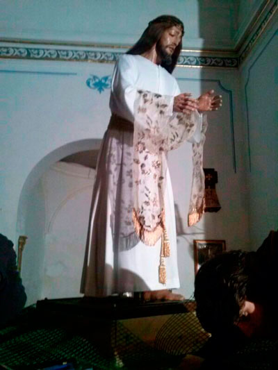

Finalizado el siglo XV, tras la reconquista del Reino de Granada, por los Reyes Catolicos,la Reina Catolica introduce la devocion Mariana en Granada a traves de un cuadro de Dolores de Maria, en su quinta Angustia, mas conocida como Ntra. Sra. de las Angustias, Patrona de Granada y de su archidiocesis, coronada Canonicamente a principio del siglo XX. En esta diocesis de Guadix-Baza,la devocion por antonomasia,es la de Ntra Sra. de las Angustias, patrona de esta ciudad accitana, y coronada Canonicamente a mediados del siglo pasado,y por segunda vez  En la Zona norte de la Provincia, el 26 de Mayo del año del señor del 1505,se funda la parroquia en esta villa de Caniles, la devocion a la Madre de Dios, en sus misterios dolorosos,es popular desde finales del siglo XVII.En la devota imagen de Ntra. Sra. de los Dolores, atributa al prestigioso escultor granadino Pedro de Mena. Desde aquel tiempo,hasta finales del siglo XIX no se encuentra documentacion, de la vida religiosa y devocional entorno a la dolorosa. Seguir

Desde Enero hasta Marzo
De lunes a sábado: Capilla de 19:00 h. Misa a las 19:00 h.
Domingo: Capilla y Misa de 9:30 h. 12:00 h. Tarde 19:00 h.
MAR
Semana Santa
AGO
Motivo de la Coronacion
MAR
Cristo Rey